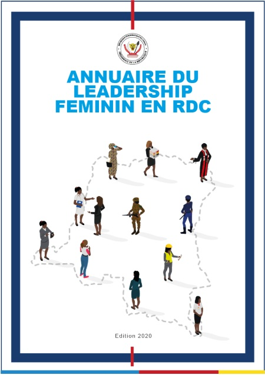

Annuaire du leadership féminin en RDC

La République Démocratique du Congo (R.D.C) regorge de ressources humaines importantes, gage le plus efficient pour la création de richesse et de l’amélioration des conditions de vie de sa population.
Ce capital humain étant constitué en majeure partie de femmes, la République Démocratique du Congo s’est dotée d’un arsenal juridique visant la promotion des droits de la Femme. Ainsi, l’article 14 de la Constitution garantit une représentation équitable des Femmes au sein des Institutions de la République et pose le principe de la «Parité Homme-Femme ».
L’annuaire du leadership féminin en R.D.C s’inscrit dans le cadre de la vision du Chef de l’État, S.E.M Félix-Antoine Tshisekedi Tshilombo en ce qu’il participe à promouvoir le parcours professionnel des femmes et à offrir de la visibilité à leurs expertises, en vue de leur implication effective dans le développement socio-économique du Congo.
Cet ouvrage est non seulement un hommage rendu à ces femmes congolaises, mettant en lumière leurs compétences dans différents domaines, mais surtout un instrument à la disposition des décideurs, afin de favoriser la matérialisation de l’application de la parité.